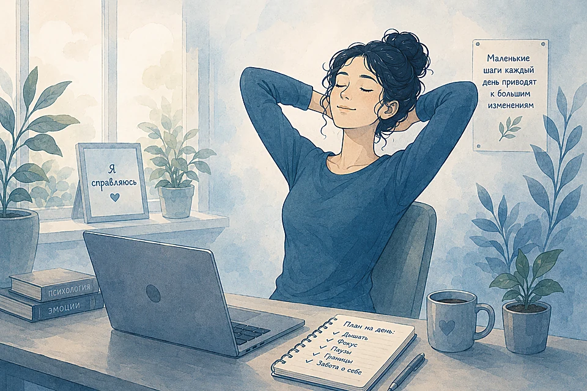
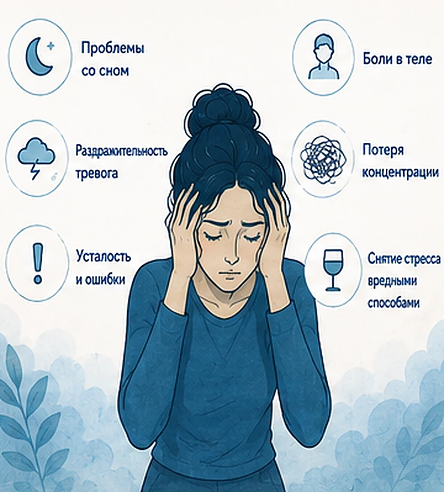
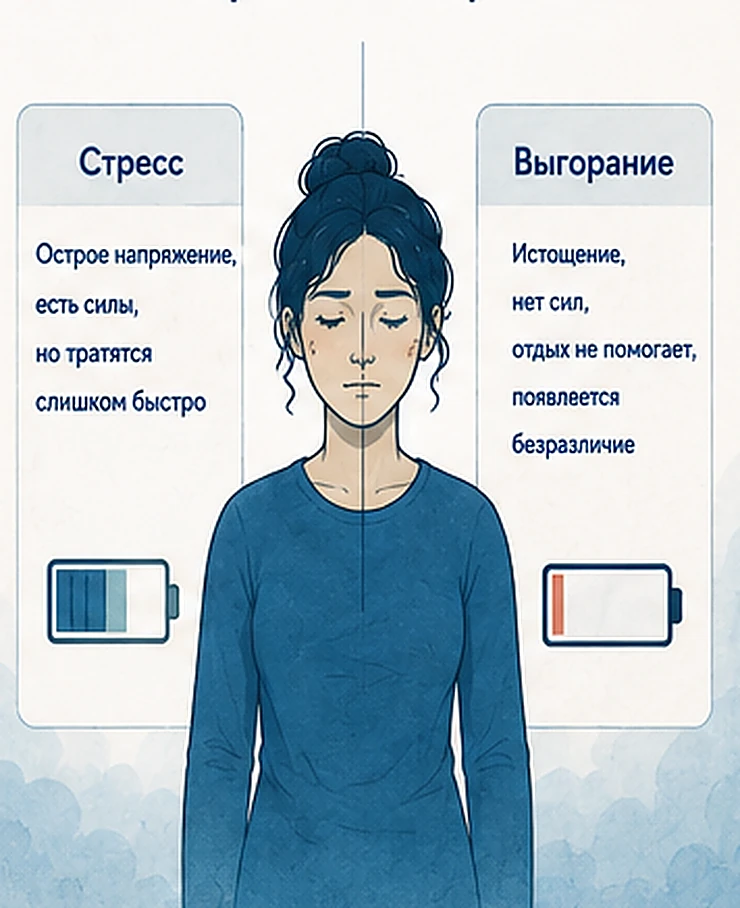
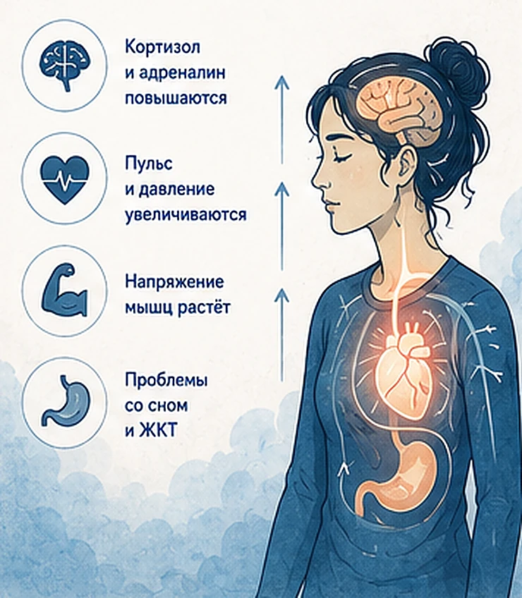
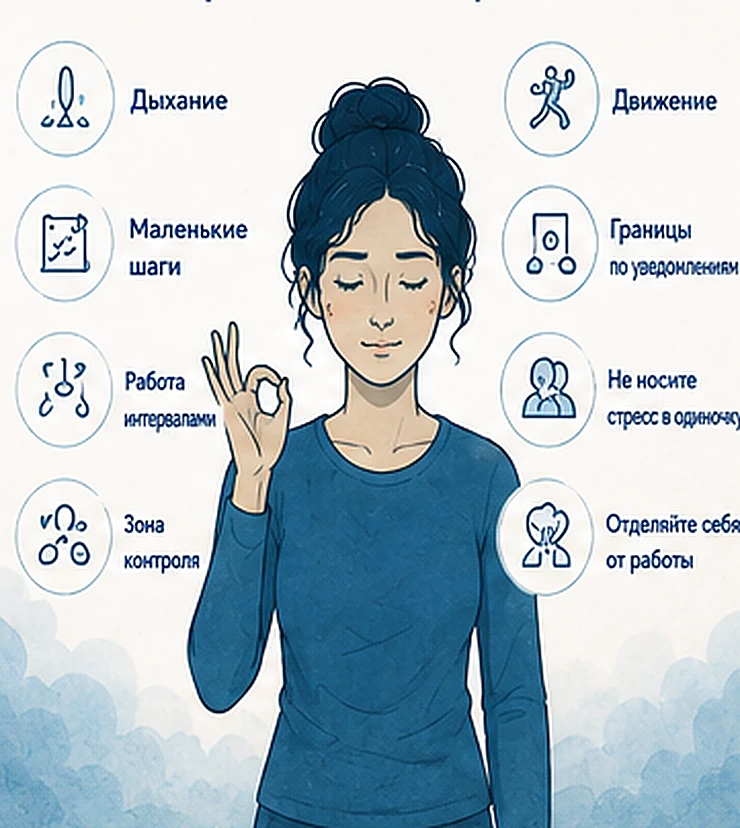
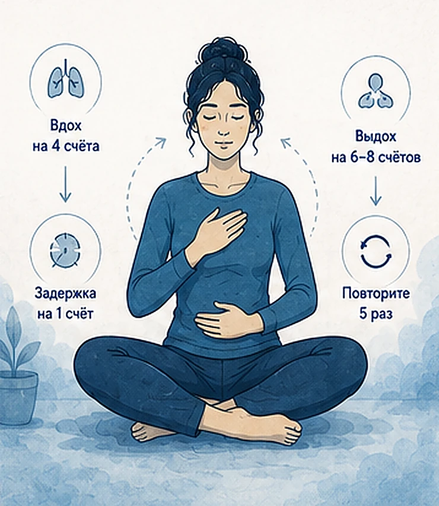
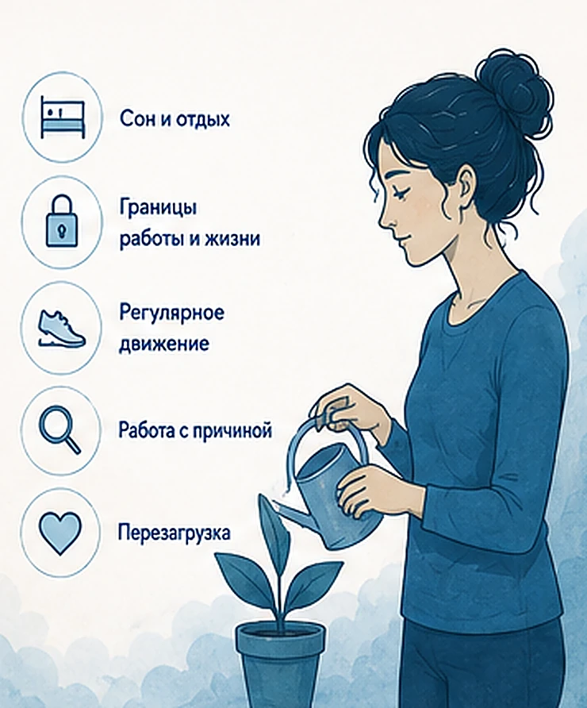
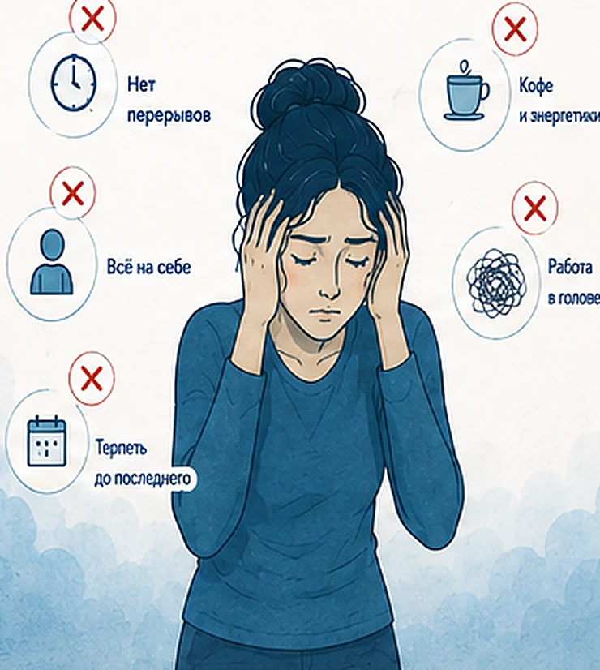
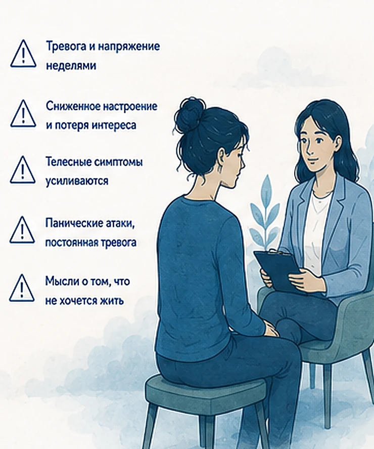

Главная → Блог → Стресс на работе
Стресс на работе: 8 способов справиться и не выгореть
Обновлено: 02.07.2026 · 9 минут чтения

Стресс на работе — это нормальная реакция организма на нагрузку, сроки и неопределённость. В коротких дозах он даже помогает собраться и сделать больше. Проблема начинается, когда напряжение становится постоянным и не отпускает даже дома. Хорошая новость: рабочий стресс можно заметно снизить — и быстрыми приёмами в моменте, и изменением привычек и границ, — не доводя себя до выгорания.
- Что такое стресс на работе и почему он возникает
- Как понять, что стресс перешёл черту
- Что происходит в организме при хроническом стрессе
- 8 способов справиться со стрессом на работе
- Как снизить стресс в долгую
- Частые причины стресса и что с ними делать
- Какие ошибки усиливают стресс
- Когда обратиться к специалисту
- Частые вопросы
Что такое стресс на работе и почему он возникает
Стресс — это реакция «бей или беги». В ответ на нагрузку организм выбрасывает кортизол и адреналин, мобилизуя силы: учащается пульс, обостряется внимание, тело готовится действовать. На короткой дистанции это полезно — помогает собраться перед важной задачей или дедлайном. Вред приносит хронический стресс: когда система напряжения не выключается неделями и организм перестаёт восстанавливаться. Именно постоянный профессиональный стресс, а не разовый аврал, со временем подтачивает и здоровье, и мотивацию.
Проблема массовая. По данным Всемирной организации здравоохранения, в 2019 году психические расстройства были примерно у 15% работающих взрослых, а из-за депрессии и тревоги ежегодно теряется около 12 миллиардов рабочих дней — это порядка триллиона долларов недополученной продуктивности в год. Так что «нервная работа» — не личная слабость, а очень распространённое состояние, с которым можно и нужно работать.
Рабочий стресс запускают вполне конкретные вещи:
- Перегрузка и сжатые сроки — задач больше, чем времени и сил;
- размытые ожидания — «сделай хорошо, но как — непонятно»;
- нехватка контроля над своей работой, приоритетами и решениями;
- конфликты и токсичный руководитель — давление, критика, обесценивание;
- страх ошибки и увольнения, перфекционизм и синдром отличника;
- многозадачность и вечная доступность в мессенджерах, размытые границы на удалёнке.
Закономерность простая: чем больше требований и чем меньше у вас ресурсов и влияния на ситуацию, тем сильнее эмоциональное напряжение. Например, менеджер, который отвечает за результат, но не может влиять на сроки и приоритеты, изматывается быстрее, чем коллега с тем же объёмом задач, но с правом сказать «этот дедлайн нереален».
Как понять, что стресс перешёл черту
Эпизодическое напряжение — это норма. Но стоит присмотреться к себе, если совпадает несколько признаков стресса:

- напряжение не отпускает даже вечером и в выходные;
- портится сон, вы просыпаетесь с мыслями о работе — про это подробнее в статье о бессоннице при тревоге;
- раздражительность, фоновая тревога, слёзы или апатия на ровном месте;
- телесные симптомы: головные боли, зажатые плечи и шея, проблемы с ЖКТ, частые простуды;
- трудно сосредоточиться, растёт число ошибок, всё валится из рук;
- по вечерам «отключаетесь» алкоголем, едой или бесконечным скроллингом.
Если это про вас — приёмы ниже помогут снизить остроту. А если истощение стало постоянным и работа больше не радует, возможно, стресс уже перешёл в эмоциональное выгорание — там нужен другой подход. Разница простая: при стрессе силы ещё есть, но тратятся слишком быстро; при выгорании их уже нет, и отдых почти не помогает.

Что происходит в организме при хроническом стрессе
Разовый стресс проходит бесследно, а вот постоянный держит тело в режиме тревоги месяцами — и это не проходит даром. Понимать последствия важно, чтобы не откладывать заботу о себе «на потом».

- Сердце и сосуды. Постоянно повышенные пульс и давление увеличивают нагрузку на сердце и риск гипертонии.
- Иммунитет. Хронически высокий кортизол подавляет защиту — отсюда частые простуды и долгое восстановление.
- Память и концентрация. В режиме тревоги мозгу труднее удерживать внимание и запоминать — растёт число ошибок.
- Пищеварение. Стресс бьёт по ЖКТ: тяжесть, спазмы, изменения аппетита.
- Сон и настроение. Напряжение крадёт сон, а недосып усиливает тревогу и раздражительность — замыкается порочный круг.
Хорошая новость: почти все эти проявления обратимы, как только напряжение снижается и возвращается нормальное восстановление.
8 способов справиться со стрессом на работе
Если не знаете, как перестать нервничать и успокоиться на работе прямо сейчас, начните с этих приёмов — они работают в моменте, когда накрывает прямо за рабочим столом. Не обязательно все сразу: выберите два-три, которые откликаются.

- Сделайте паузу на дыхание. Медленный выдох выключает режим тревоги. Вдохните на 4 счёта, выдохните на 6–8. Даже 5 циклов между задачами заметно сбрасывают напряжение.
- Разбейте задачу на маленькие шаги. Стресс часто вызывает не сама работа, а её «глыба» в голове. Выпишите задачу по пунктам и начните с одного, самого мелкого — действие снижает тревогу.
- Работайте интервалами. Техника Pomodoro (25 минут фокуса — 5 минут отдыха) держит ритм и не даёт выгорать к обеду. Паузы — не слабость, а часть продуктивности.
- Отделите зону контроля. Выпишите, на что вы влияете, а на что нет. Силы вкладывайте в первый список, второй — сознательно отпустите. Это снимает ощущение беспомощности.
- Сделайте микропаузу с движением. Встаньте, пройдитесь, разомните плечи и шею, посмотрите в окно 20 секунд. Тело сбрасывает гормоны стресса через движение.
- Поставьте границу по уведомлениям. Отключайте звук чатов на время фокус-работы и после рабочего дня. Постоянные пинги держат мозг в режиме тревоги.
- Не носите стресс в одиночку. Проговорите ситуацию с тем, кому доверяете, — это снижает накал и помогает увидеть выход, который не виден изнутри.
- Отделяйте себя от работы. Ошибка в задаче — это не «я плохой». Называйте эмоцию словами («я злюсь и устал») — точное название само по себе снижает её силу.

Накрывает прямо сейчас? Поговорите с ИИ-психологом — тепло, анонимно, без осуждения и записи.
Начать разговор бесплатноКак снизить стресс в долгую
Приёмы в моменте гасят вспышку, но чтобы стресс не накапливался, нужно менять систему, а не только тушить пожары. По сути это и есть профилактика — то, что защищает психическое здоровье и не даёт напряжению копиться.

- Восстановите сон и отдых. Сон — фундамент устойчивости к стрессу. Регулярный режим и час без экранов перед сном возвращают ресурс лучше любых техник.
- Защитите границу «работа / жизнь». Определите время окончания дня, уберите рабочие чаты вечером. Учитесь отказывать новым задачам без чувства вины.
- Двигайтесь регулярно. Даже 20–30 минут ходьбы в день снижают базовый уровень кортизола и улучшают сон.
- Разберитесь с причиной, а не только с симптомами. Если давит объём — обсудите с руководителем приоритеты. Если размыты задачи — проясните ожидания письменно.
- Планируйте перезагрузку. Хобби, природа, общение, отпуск без рабочего ноутбука — то, что наполняет, а не просто «выключает» на вечер.
Частые причины стресса и что с ними делать
У рабочего стресса почти всегда есть конкретный источник. Найти его — половина решения. Вот частые причины и первые шаги к каждой.
| Причина | Что помогает |
|---|---|
| Слишком много задач | Расставить приоритеты, обсудить сроки с руководителем, делегировать часть |
| Размытые ожидания | Уточнить критерии результата письменно, задавать вопросы заранее, а не в конце |
| Конфликт с коллегой или начальником | Спокойный разговор о фактах, а не эмоциях; фиксировать договорённости письменно |
| Страх ошибки | Признать право на ошибку, разбирать промахи без самобичевания, опираться на поддержку коллег |
| Перфекционизм, синдром отличника | Договориться с собой о критерии «достаточно хорошо», ставить реалистичную планку; если стоит страх «оказаться недостаточно хорошим» — см. синдром самозванца |
| Многозадачность | Делать по одной задаче за раз, группировать похожие, отключать лишние окна и чаты |
| Вечная доступность | Границы по уведомлениям, «часы тишины», статус «не беспокоить» после работы |
Отдельно стоит сказать о совпадении человека и среды. Часть рабочего стресса возникает не от объёма задач, а от расхождения между тем, как вы устроены, и тем, как устроена работа: интроверту тяжело даётся день из сплошных встреч, человеку с высокой добросовестностью — размытые задачи без критерия завершённости. Такой стресс не лечится техниками расслабления, потому что причина не в напряжении, а в несовпадении. Понять, где вы на каждой из пяти шкал, помогает тест на тип личности.
Какие ошибки усиливают стресс
Иногда мы неосознанно подкармливаем стресс. Вот частые ловушки:

- Работать без перерывов «на морально-волевых». Кажется, что так быстрее, но усталость и число ошибок только растут.
- Глушить стресс кофе и энергетиками. Дают краткий подъём, но усиливают тревогу и бьют по сну.
- Брать всё на себя. Неумение делегировать и говорить «нет» — прямой путь к перегрузке.
- Уносить работу домой в голове. Прокручивание рабочих сценариев вечером не даёт восстановиться; если мысли крутятся по кругу, помогут приёмы из статьи о навязчивых мыслях.
- Терпеть до последнего. «Вот закончу проект и отдохну» — а проект всегда новый. Так стресс незаметно переходит в выгорание.
Когда обратиться к специалисту
Приёмы самопомощи хорошо работают с обычным рабочим стрессом. Но есть сигналы, при которых важна помощь врача или психотерапевта:

- напряжение и тревога держатся неделями и мешают работать, спать, общаться;
- появились стойко сниженное настроение и потеря интереса ко всему;
- усилились телесные симптомы: давление, боли в сердце, проблемы с ЖКТ;
- случаются панические атаки или непроходящая тревога;
- появляются мысли о том, что не хочется жить.
Стресс и связанные с ним состояния хорошо поддаются работе с психотерапевтом (особенно в подходе КПТ), и с ними можно справиться.
Частые вопросы
Что делать, если стресс на работе из-за начальника?
Сначала отделите факты от эмоций: что именно вызывает напряжение — объём задач, тон общения, размытые ожидания. Спокойно обсудите это с руководителем на языке фактов и договоритесь о приоритетах и критериях результата, фиксируя договорённости письменно. Если давление переходит в грубость или обесценивание и разговор не помогает, стоит подключить HR или рассмотреть смену команды — терпеть токсичное давление ради работы не нужно.
Можно ли справиться со стрессом на работе без увольнения?
Да, в большинстве случаев увольнение не требуется. Часто помогает не смена работы, а изменение нагрузки и границ: расстановка приоритетов, отказ от переработок, восстановление сна и отдыха, границы по уведомлениям. Увольнение стоит рассматривать, только если условия объективно невыносимы и изменить их невозможно.
Как быстро снять стресс прямо на рабочем месте?
Быстрее всего помогает медленное дыхание с длинным выдохом: вдох на 4 счёта, выдох на 6–8, пять циклов. Добавьте короткую паузу с движением — встаньте, пройдитесь, разомните плечи, посмотрите в окно 20 секунд. Это снижает уровень гормонов стресса за пару минут и возвращает способность соображать.
Чем стресс на работе отличается от выгорания?
Стресс — это острое напряжение «здесь и сейчас», при котором сил ещё много, но их слишком много тратится. Выгорание — это уже истощение, когда сил нет, появляются цинизм и безразличие к работе, и отдых почти не помогает. Проще говоря, хронический стресс без восстановления со временем перерастает в выгорание.
Какие последствия у постоянного стресса на работе?
Хронический стресс держит организм в постоянной готовности, и это бьёт по здоровью: повышаются пульс и давление, растёт нагрузка на сердце, слабеет иммунитет, страдают сон, пищеварение, память и концентрация. На уровне эмоций накапливаются тревога и раздражительность, а без восстановления постоянный стресс перерастает в выгорание. Поэтому важно снижать напряжение, не дожидаясь, пока появятся телесные симптомы.
Если работа выматывает и не отпускает — не оставайтесь с этим один на один. ИИ-психолог поможет разложить мысли по полкам и наметить первые шаги: тепло, анонимно, без осуждения.
Начать разговор бесплатноЧитать также
- Эмоциональное выгорание: 5 стадий, признаки и как восстановиться — если стресс уже перешёл в истощение.
- Как справиться с тревогой: 8 техник, которые помогают — если работа сопровождается постоянной тревогой.
- Прокрастинация: почему вы откладываете дела и 7 способов перестать — если из-за напряжения задачи откладываются до последнего.
- Апатия: почему нет сил и ничего не хочется — и что делать — когда стресс сменился безразличием.
- Бессонница при тревоге: почему не спится и что делать — вернуть сон, фундамент устойчивости к стрессу.
- Токсичные отношения: 12 признаков и как из них выйти — если источник стресса это руководитель или коллега, рядом с которым вы всё время виноваты.
Материал подготовлен командой AI Therapist и основан на доказательных подходах к работе со стрессом — когнитивно-поведенческой терапии (КПТ), ACT и практиках осознанности (Mindfulness). Статья носит просветительский характер и не заменяет консультацию специалиста.
Источники: Всемирная организация здравоохранения — психическое здоровье на рабочем месте; Американская психологическая ассоциация (APA) — стресс на работе.
Кто отвечает за содержание сайта и по каким правилам мы готовим материалы — на странице о проекте.